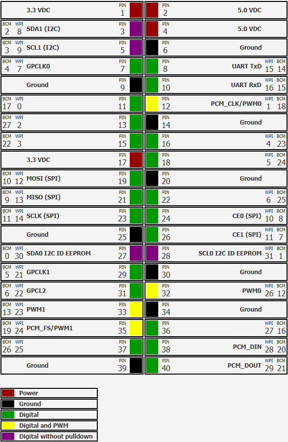
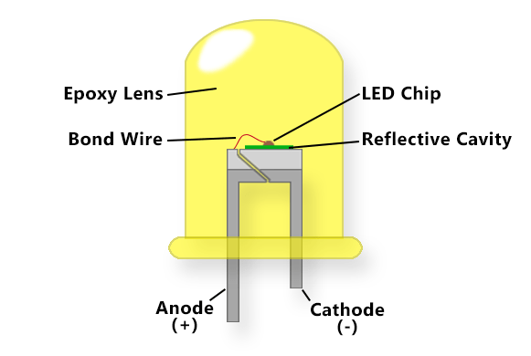
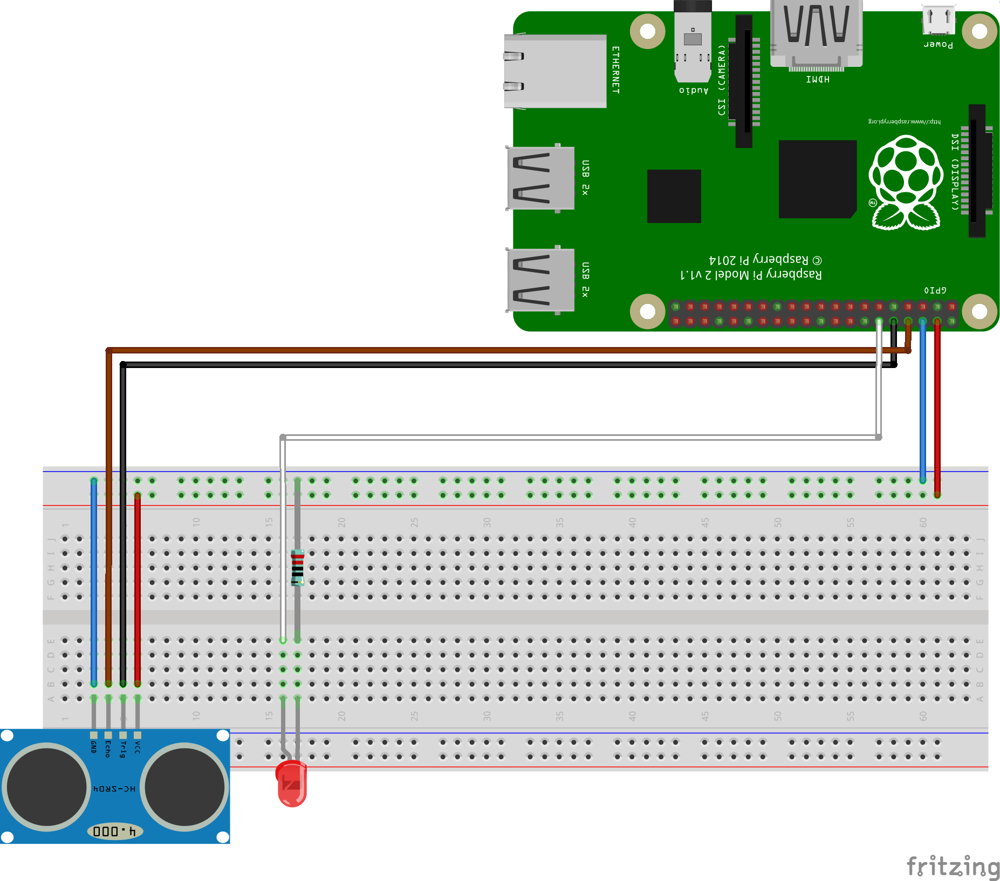
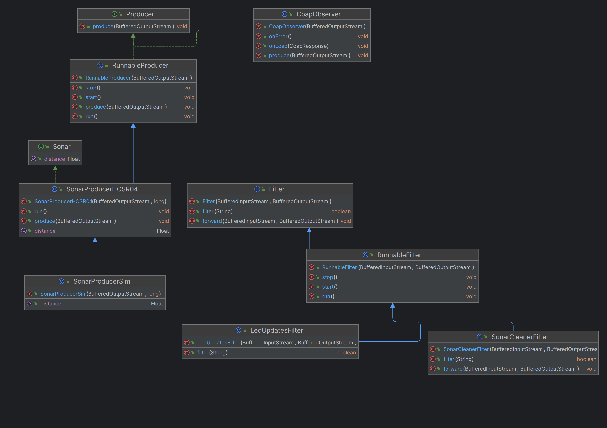
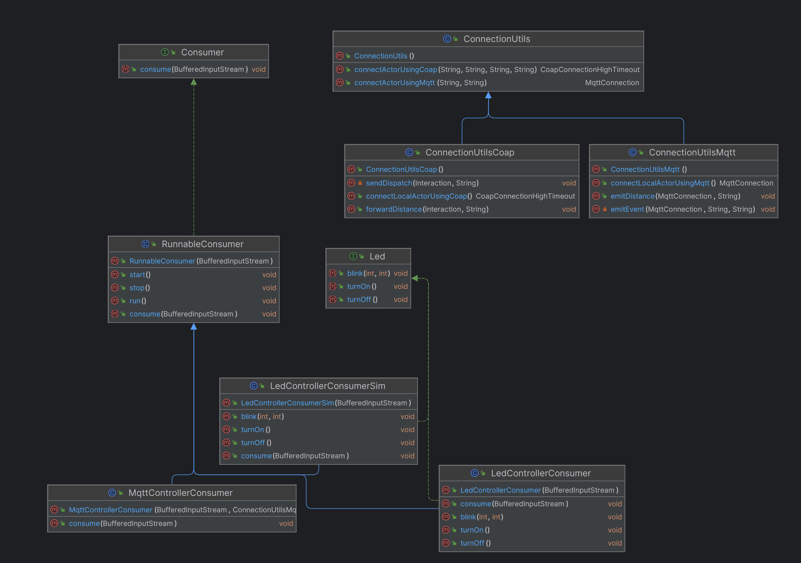

Introduction
In questo Sprint verranno analizzati gli Alarm Requirements relativi al movimento del TransportTrolley.
Requirements
Descrizione requirements a questa pagina
- abbiamo un sonar (alarm device) ed un led (warning device) connessi ad un RaspberryPi
- bisogna fermare il trolley quando il sonar rileva una distanza inferiore ad DLIMT
- il trolley non deve essere fermato nuovamente se non sono passati almeno MINT millisecondi dall'interruzione precedente
Requirement analysis
Viene riportato nel seguente documento la versione del TemaFinale23 analizzata contestualmente a questo Sprint.
Questo componente è alieno al progetto core del sistema (qak), non è per cui necessario, per ora, riportarne il modello architetturale.
Architettura logica
Si riporta di seguito il modello di architettura logica, limitato al contesto di interesse di questo Sprint.

ATTENZIONE: warning/alarm device NON vengono generati dal modello qak, saranno aggiornati manualmente a fronte di eventuali modifiche.
Modello di interazione
Alarm device
Data la natura del vincolo che impone al TransportTrolley di fermarsi sarà necessario decidere se inviare al TransportTrolley un segnale di stop quando viene rilevata una certa distanza oppure inviare tutte le rilevazioni di distanza generate dal warning device sul RaspberryPi, lasciando che sia esso a decidere quando fermarsi (a seconda di DLIMT e MINT).
Da questa domanda emergono due possibili modelli di interazione relativi alle misure rilevate dal sonar:
Modello 1:
| Mittente | Destinatario | Tipologia interazione/messaggio | Identificatore messaggio | Payload | Descrizione |
|---|---|---|---|---|---|
| RaspberryPi | transporttrolley | Dispatch | sonarstop | sonarstop() | Indica al transporttrolley di fermarsi. |
| RaspberryPi | transporttrolley | Dispatch | sonarstart | sonarstart() | Indica al transporttrolley di ripartire. |
Modello 2:
| Mittente | Destinatario | Tipologia interazione/messaggio | Identificatore messaggio | Payload | Descrizione |
|---|---|---|---|---|---|
| RaspberryPi | Event | distance | distance(DIST) | Il sonar ha rilevato un nuovo dato. | |
| sonar | transporttrolley | Dispatch | sonarstop | sonarstop() | Indica al transporttrolley di fermarsi. |
| sonar | transporttrolley | Dispatch | sonarstart | sonarstart() | Indica al transporttrolley di ripartire. |
Warning device
Il warning device deve essere in grado di mostrare tra stati diversi: TT fermo, TT in movimento e TT in HOME, il led si presta a questo scopo:
- fermo: led acceso
- movimento: led lampeggiante
- home: led spento
Per fare in modo che il RaspberryPi abbia le informazioni relative allo stato del TransportTrolley è possibile agire in due modi differenti, si propongono quindi due modelli di interazione:
Modello 1:
| Mittente | Destinatario | Tipologia interazione/messaggio | Identificatore messaggio | Payload | Descrizione |
|---|---|---|---|---|---|
| transporttrolley | RaspberryPi | Dispatch | ttstate | ttstate(STATE) | Lo stato del TransportTrolley è cambiato. |
Modello 2:
| Mittente | Destinatario | Tipologia interazione/messaggio | Identificatore messaggio | Payload | Descrizione |
|---|---|---|---|---|---|
| transporttrolley | RaspberryPi | Event | ttstate | ttstate(STATE) | Lo stato del TransportTrolley è cambiato. |
Costanti
Contestualmente agli obiettivi di questo sprint si considerano le seguenti due costanti:
| Costante | Tipo | Descrizione |
|---|---|---|
| DLIMT | Float | Quando il sonar rileva una distanza minore di questo valore il TransportTrolley deve essere fermato. |
| MINT | Int | Millisecondi che devono trascorrere perché il robot possa essere nuovamente fermato dal sonar. |
RaspberryPi
I requisiti specificano che il componenti sonar e led sono connessi a un RaspberryPi, un single board computer equipaggiato con una serie di GPIO (General Purpose Input/Output) pin utili a connettere e interagire con varie tipologie di dispositivi hardware.
KEYPOINT: Questo componente cosistuirà un nodo esterno al sistema ColdStorageService.
Si riporta di seguito il pinout dei GPIOs del dispositivo, sarà utile in seguito per definire lo schema di collegamento dei componenti.
Sonar
Il sonar è un componente di input che fornisce la distanza degli oggetti di fronte ad esso entro un certo limite e in un certo cono di efficacia.
Il committente ha specificato la tipologia esatta di sonar da utilizzare per il nodo ovvero una Sonar HC-SR04; questo sonar è efficace in un range 2cm-400cm e in una area delimitata da un angolo di 30 gradi di fronte ad esso.
Per leggere un dato rilevato dal sonar è necessario inviare un impulso sul pin Trigger per almeno 10µs, questo comunica al sonar di inviare 8 volte un impulso a 40kHz, successivamente viene inviato sul pin echo un impulso di durata andata e ritorno del segnale acustico generato, conoscendo la velocità del suono è possibile calcolare la distanza dell'oggetto.
Led
Il led è un componente di output con due pin: uno per fornire differenza di potenziale, l'altro per la messa a terra. La sua luminosità potrebbe essere modificata tramite un potenziale analogico, tuttavia il raspberry non supporta questa funzionalità, pertanto il nostro led avrà soltanto 2 stati: on e off (e un terzo stato lampeggiante). 
Problem analysis
Interazioni
Partendo dai modelli individuati nell'analisi dei requisiti si può notare come alcuni di essi non offrono soluzioni che rispettano i principi della clean architecture.
Se si utilizzasse il modello che prevede un Dispatch per l'informazione sullo stato del TransportTrolley si creerebbe una relazione stretta tra i due componenti; è preferibile implementare un modello di interazione che non prevede la conoscenza dell'esistenza del RaspberryPi da parte del TransportTrolley.
Facendo riferimento al warning device si decide invece di inviare la distanza al TransportTrolley, lasciando che esso implementi la logica di arresto e ripartenza per mantenere il business core all'interno del servizio e non su un componente esterno (che potrebbe essere sostituito con altre implementazioni).
Alla luce di queste considerazioni si sceglie di proseguire con il seguente modello di interazione:
| Mittente | Destinatario | Tipologia interazione/messaggio | Identificatore messaggio | Payload | Descrizione |
|---|---|---|---|---|---|
| RaspberryPi | Observable resource | distance | distance(DIST) | Il sonar ha rilevato un nuovo dato. | |
| sonar | transporttrolley | Dispatch | sonarstop | sonarstop() | Indica al transporttrolley di fermarsi. |
| sonar | transporttrolley | Dispatch | sonarstart | sonarstart() | Indica al transporttrolley di ripartire. |
| transporttrolley | RaspberryPi | Observable resource | ttstate | ttstate(STATE) | Lo stato del TransportTrolley è cambiato. |
KEY-POINT: si rendono osservabili le risorse ttstate e distance per uniformare con altre risorse della stessa tipologia (peso coldroom) gestite in sprint precedenti e necessarie in sprint successivi.
Per fermare il TransportTrolley si rende necessario introdurre un nuovo messaggio per comunicare lo stop al trolleyexecutor, in quanto utilizzare direttamente un evento di alarm diretto al basicrobot violerebbe il principio di singola responsabilità, quindi il nuovo messaggio stop sarà diretto al trolleyexecutor.
Si definisce questo messaggio come dispatch, in quanto non è necessario per il TransportTrolley ottenere una risposta dopo aver inviato questo istruzione.
| Mittente | Destinatario | Tipologia interazione/messaggio | Identificatore messaggio | Payload | Descrizione |
|---|---|---|---|---|---|
| transporttrolley | trolleyexecutor | Dispatch | stop | stop() | Il transporttrolley comunica al trolleyexecutor di fermarsi. |
Come nel caso della ServiceAccessGUI, verrà impostato il servizio in modo da mantenere un unico punto di accesso, verranno internamente inoltrati e delegati i messaggi rilevanti.
Collegamento componenti
Si riporta di seguito la configurazione minima per collegare i componenti sonar e led al RaspberryPi.
Utilizzando la numerazione BCM si definisce la seguente configurazione:
- Sonar
- Trigger: BCM 15
- Echo: BCM 16
- Led
- Vcc: BCM 18
Si denota come il sonar possa rilevare soltanto oggetti in un cono di 30 gradi di fronte ad esso e in un range non minore di 2cm e maggiore 400cm.
Project
Interazione GPIO
Per interagire con i pin GPIO del RaspberryPi esistono svariate librerie, per poter integrare questa funzionalità con lo stack software già a nostra disposizione per le comunicazioni si è deciso di utilizzare la libreria Pi4J, questa libreria utilizza la numerazione BCM.
Sonar
Abbiamo realizzato una interfaccia Sonar che definisce i metodi che una implementazione di un Sonar deve esporre:
public interface Sonar {
Float getDistance() throws InterruptedException;
}
Abbiamo realizzato due implementazioni, la prima è una implementazione simulata per fini di testing, l'altra è l'implementazione che sfrutta Pi4J per comandare i GPIO del Raspberry e restituire la distanza letta, di seguito un estratto di codice della configurazione del contesto di utilizzo dei pin.
private final DigitalOutput triggerPin
Context pi4jContext = Pi4J.newAutoContext();
DigitalOutputConfigBuilder triggerPinConfig = DigitalOutputConfig.newBuilder(pi4jContext)
.id("trigger")
.address(TRIGGER_PIN)
.initial(DigitalState.LOW)
.shutdown(DigitalState.LOW)
.provider("pigpio-digital-output");
this.triggerPin = pi4jContext.create(triggerPinConfig);
Per ottenere la distanza dal sonar l'implementazione del metodo getDistance() utilizza gli oggetti DigitalOutput e DigitalInput per inviare e leggere segnali low e high dai GPIO.
triggerPin.high();
Thread.sleep(0, 10000);
triggerPin.low();
while (echoPin.isLow()) {
continue;
}
Long startTime = System.nanoTime();
while (echoPin.isHigh()) {
continue;
}
Long endTime = System.nanoTime();
long duration = endTime - startTime;
BigDecimal halfDuration = BigDecimal.valueOf(duration).divide(BigDecimal.valueOf(2), 1, RoundingMode.DOWN);
BigDecimal seconds = halfDuration.divide(BigDecimal.valueOf(1000000000), 9, RoundingMode.DOWN);
return BigDecimal.valueOf(34300).multiply(seconds).floatValue();
Led
La configurazione del pin per gestire il led è simile a quella del sonar, si differenza per il fatto che il led richiede soltanto un pin DigitalOutput.
Interazioni
Observer ttstate
Allo scopo di inviare eventi e ricevere aggiornamenti sulle risorse coinvolte si riutilizzeranno componenti già definiti per il componente ServiceAccessGUI, in particolare un CoapObserver verrà istanziato per ricevere gli aggiornamenti sulla risorsa ttstate.
Generatore eventi sonar
Per inviare al ColdStorageService gli eventi per comunicare la distanza rilevata dal sonar abbiamod deciso di stabilire una connessione MQTT, abbiamo scelto MQTT dato che il framework QActor implementa le funzionalità necessarie per iscriversi alla ricezione di eventi pubblicati su un particolare topic.
MQTT implementa una architettura pub/sub topic, dove un client può pubblicare eventi su un topic e un altro client si iscrive al topic del quale vuole ricevere aggiornamenti.
Il sonar pubblicherà gli eventi distance sul topic "unibo/sonar/events".
Sonarrec
Nel ColdStorageService si introduce il nuovo attore sonarrec, questo attore utilizzerà un client mqtt per ricevere i messaggi pubblicati, tutti i messaggi gestiti verranno pubblicati sul broker mqtt pubblico mqtt.eclipseprojects.io.
var brokerAddr = "tcp://mqtt.eclipseprojects.io"
mqtt.connect(name, brokerAddr)
mqtt.subscribe(this, "unibo/sonar/events")
Questo componente è incaricato di implementare la logica di gestione dei limiti DLIMT e MINT, il nuovo attore valuta se la ditanza ricevuta comporta uno stop o restart del TransportTrolley, comunicandolo tramite i messaggi sonarstart e sonarstop.
TransportTrolley
L'attore transporttrolley è stato adattato per supportare la ricezione di sonarstop e sonarstart.
Alla ricezione di sonarstop il transporttrolley arresta il trolleyexecutor e si mette in attesa di un messaggio sonarstart, quando arriva il transporttrolley riprende dallo stato che aveva lasciato in precedenza.
Struttura producer/consumer
I nuovi componenti introdotti in questo sprint saranno strutturati come producer e consumer, in particolare:
- Led: consumer
- Sonar: producer
I producer implementeranno il metodo produce e i consumer il metodo consume, si estendo inoltre il concetto di consumer/produce a quello di runnable consumer e runnable producer. I runnable producer o consumer sono entità che mantengono un Thread che richiama il metodo produce o consume durante la loro esistenza.
Alcuni producer e consumer possono aggiungere un delay tra le chiamate del metodo produce.
Filter
Abbiamo introdotto anche il concetto di filtro, interponibile tra un producer e un consumer, che implementa una particolare funzione boolean filter(Object data) che deve restituire true quando il dato non deve essere inoltrato.
Ogni filtro implementa di default la funzione void forward(InputStream in, OutputStream out) che inoltra il messaggio ricevuto da un consumer a un producer se non deve essere filtrato secondo la funzione filter.
Anche i filter vengono estesi a runnable filter.
Questo concetto si rende utile per il sonar allo scopo di filtrare quei valori prodotti dal componente che sono fuori dal range nelle specifiche. Per il led si renderà utile per filtrare i messaggi ricevuti dall'observer che non sono di interesse per il cambiamento di stato del led.
Comunicazione componenti
I componenti elencati vengono messi in comunicazione tramite una serie di PipedOutputStream e PipedInputStream.
Verrà creato un OutputStream per ogni consumer e filtro e un InputStream per ogni produce e filter; a partire da questi stream verranno creati PipedOutputStream e PipedInputStream, verranno poi connessi tramite il metodo connect.
PipedOutputStream observerToFilter = new PipedOutputStream();
PipedInputStream filterFromObserver = new PipedInputStream();
PipedOutputStream filterToLed = new PipedOutputStream();
PipedInputStream ledFromFilter = new PipedInputStream();
// Connect the pipes
sonarToCleaner.connect(cleanerFromSonar);
cleanerToSender.connect(senderFromCleaner);UML
Di seguito si riporta il diagramma UML delle classi coinvolte.
 Deployment
Configurazione RaspberryPi
Per configurare il RaspberryPi è necessario installare un sistema operativo su una microSD, l'OS scelto è RaspbianOS, dato che offre alcuni tool specifici per configurare il Raspberry come raspi-config.
Una volta installato il sistema operativo è necessario installare le dipendenza java, ovvero OpenJDK 11, e copiare le librerie necessarie a compilare ed eseguire il codice, in particolare Pi4J.
Vengono resi disponibili due script, compile e run per compilare ed eseguire il codice.
Riccardo Barbieri - riccardo.barbieri11@studio.unibo.it

Leonardo Ruberto - leonardo.ruberto@studio.unibo.it